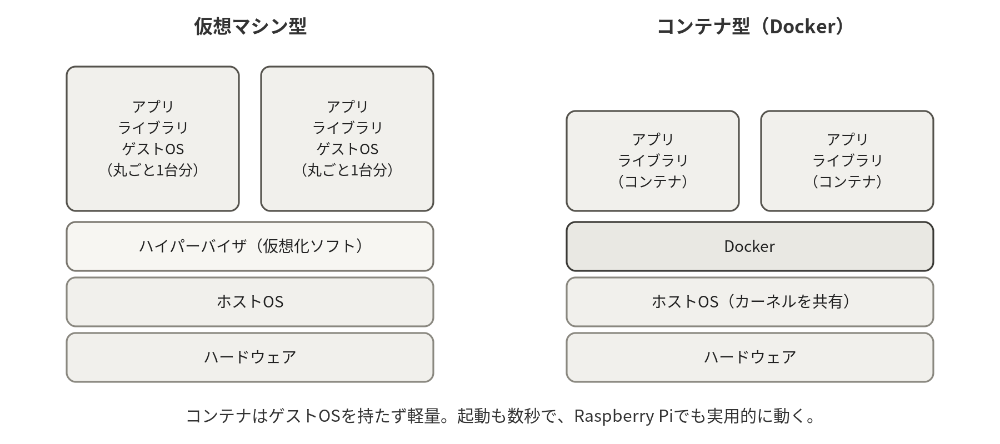
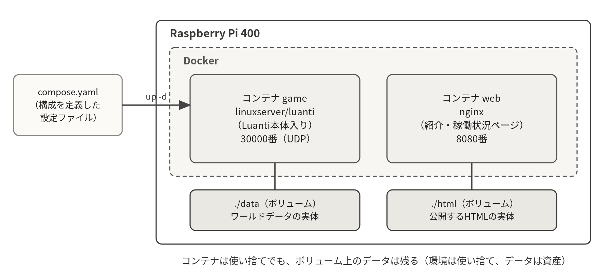

10.1仮想化の2つの方式

1台の物理マシンの上に複数の独立した実行環境を作る技術を仮想化という。方式は大きく2つある。仮想マシン型は、ハイパーバイザという仮想化ソフトの上に、ゲストOSを丸ごと含む仮想マシンを立てる。完全な分離が得られる反面、OSを1台分ずつ動かすためメモリもストレージも多く消費し、起動にも分単位の時間がかかる。コンテナ型は、ホストOSのカーネルを共有したまま、プロセスの見える世界（ファイルシステム、ネットワーク、プロセス一覧）だけを区切る。ゲストOSを持たないため軽量で、起動は秒単位、Raspberry Piのような小型機でも実用になる。
10.2Dockerの基本概念
Dockerを理解する鍵は、イメージとコンテナの区別である。イメージは「アプリケーションと依存物一式を固めた読み取り専用のひな型」、コンテナは「イメージから起動した実行中の実体」である。プログラムとプロセスの関係（第6章）とちょうど同じで、1つのイメージから何個でもコンテナを起動できる。イメージはDocker Hubなどのレジストリで共有されており、docker compose up しただけでlinuxserver/luantiのサーバが動いたのは、ビルド済みイメージをレジストリから取得（pull）したからである。
イメージはレイヤ（層）の重なりでできている。「OSの基本部分」＋「共通ライブラリ」＋「サーバ本体」のように差分を積み重ねる構造のため、共通部分は複数のイメージで共有され、ダウンロードもストレージも節約される。自分でレイヤを定義してイメージを作るための設計図がDockerfileである（最終課題の発展テーマ）。
10.3データの扱い：ボリューム
コンテナ内で書き込んだデータは、コンテナを削除すると一緒に消える。これは欠点ではなく「環境をいつでも作り直せる」ための設計であり、残したいデータだけをボリューム（ホスト側のディレクトリとの対応付け）としてコンテナの外に出す。実習のcompose.yamlで ./data:/config/.minetest と書いたのは、「コンテナ内の /config/.minetest を、ホストの ./data に重ねる」という意味である。ワールドデータはホスト側に実体があるため、コンテナを何度作り直しても失われない。「環境は使い捨て、データは資産」というコンテナ運用の原則は、この仕組みに支えられている。

10.4ComposeとInfrastructure as Code
docker compose は、複数コンテナの構成をcompose.yamlという1つのファイルに宣言的に記述し、一括で管理するツールである。「宣言的」とは、手順（どうやって作るか）ではなく、あるべき状態（何がどう動いているべきか）を書くという意味である。composeは現在の状態と記述を比較し、差分だけを適用する。第5回でwebサービスを追記して up し直したとき、gameコンテナは再起動されず、webだけが新規に起動されたのはこのためである。
この「インフラの構成をコードとして記述し、バージョン管理し、何度でも同じ環境を再現する」という考え方をInfrastructure as Code（IaC）と呼ぶ。クラウド時代の運用の中心概念であり、compose.yamlはその入門である。設定ファイルさえ保存しておけば環境を捨てても再現できる、という感覚を実習で体験したことは、TerraformやKubernetesといった実務のツール群を学ぶときの土台になる。
10.5コンテナ利用の注意点
- イメージの出所を確認する。レジストリには誰でもイメージを公開できるため、公式イメージや実績のあるイメージ（linuxserver/luantiは後者の代表例）を選ぶ。
- タグを意識する。イメージ名の後ろの
:latestは「その時点の最新」であり、時間が経つと中身が変わる。再現性を重視する場面ではバージョンを固定する（例：nginx:1.27-alpine）。 - コンテナも監視・更新の対象である。「動いているから放置」はホストのサーバと同様に危険で、イメージの更新（脆弱性修正）を定期的に取り込む運用が必要である。
10.6Dockerの基本操作：コンテナのライフサイクル
コンテナには「イメージの取得（pull）→作成→起動→停止→削除」というライフサイクルがある。docker run はこのうち取得（手元になければ）・作成・起動をまとめて実行する複合コマンドであり、実習で最初に実行した docker run hello-world の出力には、まさにこの流れが説明されている。コンテナを削除（rm）してもイメージは手元に残るため、同じイメージから何度でも新しいコンテナを作り直せる。「環境は使い捨て、データは資産」という原則は、このライフサイクルに支えられている。
| コマンド | はたらき |
|---|---|
docker run [オプション] イメージ | コンテナの作成と起動（イメージが無ければpullも行う） |
docker ps ／ docker ps -a | 実行中の一覧／停止中も含めた一覧。STATUS列に注目する |
docker stop ／ start 名前 | 停止（後片付けの機会を与える）／再開 |
docker rm 名前 | コンテナの削除。イメージとボリュームは残る |
docker images ／ docker rmi | 手元のイメージ一覧／イメージの削除 |
docker logs -f 名前 | コンテナのログを表示（-f でリアルタイム追跡） |
docker exec -it 名前 bash | 稼働中のコンテナの中でシェルを開く |
docker run のオプションは、実習で書いた compose.yaml の各項目と1対1に対応している。次の例（nginx）を compose.yaml のweb サービスの定義と見比べてほしい。
docker run -d --name web -p 8080:80 -v $(pwd)/html:/usr/share/nginx/html:ro --restart unless-stopped nginx:alpine
-p 8080:80 はポート公開（ホスト側:コンテナ側）、-v はボリューム、--restart unless-stopped は自動再起動、nginx:alpine はイメージ名:タグ-d はバックグラウンド実行、-p はポートの公開、-v はボリューム（:ro を付けると読み取り専用）、--restart は自動再起動の方針である。つまり compose.yaml は、これらのオプションをファイルに書き下ろしたものにすぎない。composeが読めればrunコマンドも読めるし、その逆もまた然りである。イメージ名は「レジストリ/リポジトリ:タグ」で構成され、タグを省略すると :latest が使われる（10.5節で述べたとおり、再現性が必要な場面ではタグを固定する）。
docker exec -it 名前 bash を使うと、稼働中のコンテナの中に入って調査できる。ただしコンテナの中身は必要最小限で、viすら入っていないことも多い。中に入って直接修正するのではなく、ホスト側のファイル（ボリューム）や compose.yaml を直してコンテナを作り直すのがコンテナ流の運用である。
※ docker stop は第6章の systemctl stop と同じ発想で、まず「終了してください」という丁寧な依頼（SIGTERM）を送り、応答がなければ強制終了する。ワールドの保存など後片付けの機会が与えられるため、docker kill（即時抹消）を常用してはいけない。
10.7docker compose の操作
composeのコマンドは「compose.yamlのあるディレクトリ」で実行するのが基本である（実習では ~/game）。重要な性質は差分適用であり、up は足りないものだけを作り、compose.yamlを編集した後の up -d は変更のあったサービスだけを作り直す。何かを変えるたびに全部を消して作り直す必要はない。
| コマンド | はたらき |
|---|---|
docker compose up -d | 一式を起動。2回目以降は差分だけを作成・再作成する |
docker compose down | コンテナとネットワークを削除（ボリュームは残る） |
docker compose ps | このプロジェクトのコンテナ一覧と状態 |
docker compose logs -f [サービス名] | ログの表示。サービス名を省略すると全サービス分 |
docker compose restart [サービス名] | サービスの再起動（設定ファイル変更の反映など） |
docker compose pull | イメージの更新を取得（適用は次の up -d で） |
docker compose exec サービス名 bash | 指定サービスのコンテナに入る |
docker compose config | compose.yamlの文法確認（起動せずに検証できる） |
docker compose pull # 新しいイメージを取得
docker compose up -d # 更新があったサービスだけ再作成
docker compose ps # 状態を確認
docker compose logs -f game # 気になるサービスのログを追う※ down はコンテナとネットワークだけを消し、./data のようなホスト側ディレクトリ（バインドマウント）には触れない。down -v は compose.yaml で宣言した名前付きボリュームと匿名ボリュームを削除するオプションで、実習のバインドマウントは消えないが、名前付きボリュームにデータを置く構成では取り返しがつかない。癖として不用意に -v を付けないこと（もちろん、ホスト側で rm -rf data とすればワールドは消える）。第8章のバックアップがあれば、こうした操作も恐れずに試せる。
10.8コンテナのデバッグ
コンテナの障害対応も、第8章で学んだ「エラーを読む→仮説を立てる→確認する」の繰り返しであり、入口はほぼ常にログである。まず docker ps -a のSTATUS列で「Exited (1)」のような終了コードを確認し、docker compose logs でエラーメッセージを読む。よくある症状と確認手順を挙げる。
| 症状 | 確認すること |
|---|---|
| 起動してもすぐ落ちる | docker ps -a で終了コード → logs でエラーを読む。設定の誤りかPUID/PGIDの不一致が定番 |
| port is already allocated | ポートの先客がいる。ss -tlnp（UDPは -ulnp）で使用中のプロセスを探す |
| Permission denied | ボリュームの所有者とPUID/PGIDの不一致。sudo chown -R 1000:1000 data |
| イメージをpullできない | ネットワーク疎通と、イメージがarm64（Raspberry Pi）に対応しているかを確認 |
| ディスクを圧迫している | docker system df で内訳を確認 → docker system prune で未使用の資源を掃除 |
リソースの監視には docker stats が使える。コンテナごとのCPU・メモリ使用量をリアルタイム表示する、第3回で使ったtopのコンテナ版である。「平常時の値を知っておく」という監視の基本（8.5節）は、コンテナになっても変わらない。
※ docker system prune は「使われていないもの」を一括削除する強力なコマンドである。停止中のコンテナも削除対象になるため、実行前に docker ps -a で消えて困るものがないかを必ず確認すること。